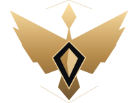

DANGERIONS
01 / DER WETTSTREIT
Jeder Aufstieg zählt.
Eine Legion. Gemeinsam nach oben.
✦ DANGERIONS · ITEM-LEVELVeränderung · letzte 24 h
◇ Gleicher Item-Level = gleicher Rang.
Charakterdaten werden geladen
Euer Aufstieg.
Die Legion
Zuwachs · 24 hZeitraum & Quellen
Legionsbuch
DAS LEGIONSBUCH
Die letzten Kapitel
EST. ATIEL
03 / EIN BANNER. EINE LEGION.
Rivalen im Ranking.
Verbündete in Atreia.
Vom ersten Flug bis zum nächsten Meilenstein: Wir steigen gemeinsam auf. Diese Halle gehört den Dangerions.
✦ Asmodier⌖ Atiel · Europa◇ 8 erfasste Daevas